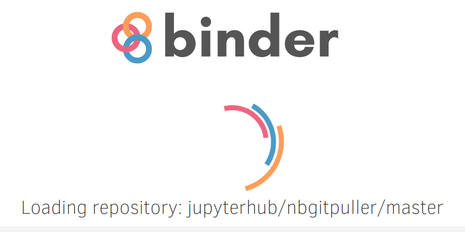
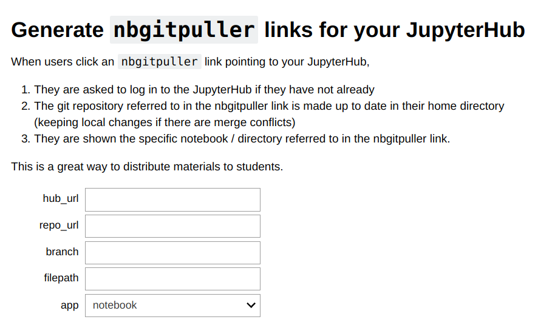
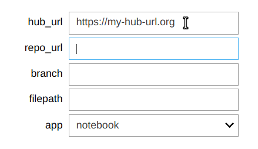
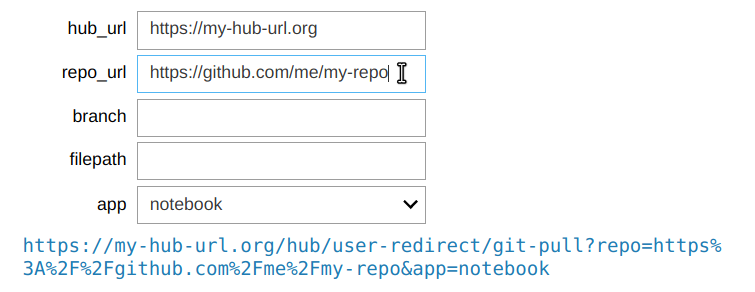
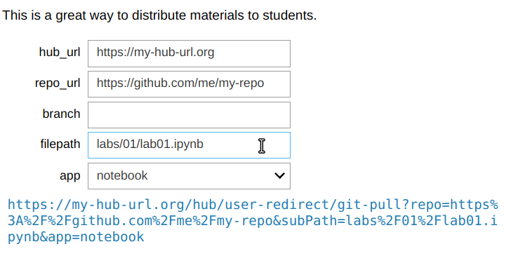
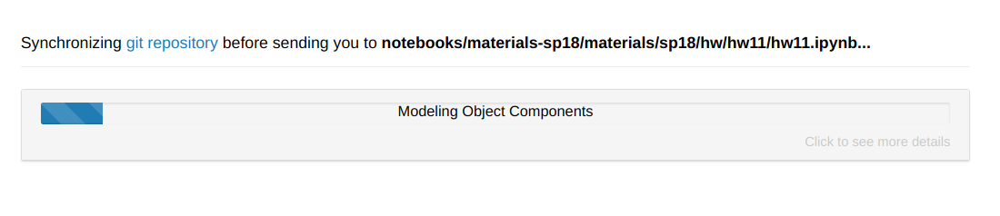

Distributing materials to users with nbgitpuller¶
Goal¶
A very common need when using JupyterHub is to easily distribute study materials / lab notebooks to students.
Students should be able to:
- Easily get the latest version of materials, including any updates the instructor has made to materials the student already has a copy of.
- Be confident they won’t lose any of their work. If an instructor has modified something the student has also modified, the student’s modification should never be overwritten.
- Not have to deal with manual merge conflicts or other complex operations.
Instructors should be able to:
- Use modern collaborative version control tools to author & store their materials. This currently means using Git.
nbgitpuller is a Jupyter Notebook extension that helps achieve these goals. This tutorial will walk you through the process of creating a magic nbgitpuller link that users of your JupyterHub can click to fetch the latest version of materials from a git repo.
Pre-requisites¶
- A JupyterHub set up with The Littlest JupyterHub
- A git repository containing materials to distribute
Step 1: Generate nbgitpuller link¶
Generate the link with a Binder app.
The easiest way to generate an nbgitpuller link is to use the mybinder.org based application. Open it, and wait for it to load.
A blank form with some help text will open up.
Enter the IP address or URL to your JupyterHub under
hub_url. Includehttp://orhttps://as appropriate.Enter the URL to your Git repository. This could be from GitHub, GitLab or any other git provider - including the disk of the server The Littlest JupyterHub is installed on. As you start typing the URL here, you’ll notice that the link is already being printed below!
If your git repository is using a non-default branch name, you can specify that under
branch. Most people do not need to customize this.If you want to open a specific notebook when the user clicks on the link, specify the path to the notebook under
filepath. Make sure this file exists, otherwise users will get a ‘File not found’ error.If you do not specify a file path, the user will be shown the directory listing for the repository.
By default, notebooks will be opened in the classic Jupyter Notebook interface. You can select
labunderapplicationto open it in the JupyterLab instead.
The link printed at the bottom of the form can be distributed to students now! You can also click it to test that it is working as intended, and adjust the form values until you get something you are happy with.
Hand-craft your nbgitpuller link
If you’d prefer to hand-craft your nbgitpuller link (e.g. if the Binder
link above doesn’t work), you can use the following pattern:
http://<my-jhub-address>/hub/user-redirect/git-pull?repo=<your-repo-url>&branch=<your-branch-name>&subPath=<subPath>&app=<notebook | lab>
- repo is the URL of the git repository you want to clone. This parameter is required.
- branch is the branch name to use when cloning from the repository.
This parameter is optional and defaults to
master. - subPath is the path of the directory / notebook inside the repo to launch after cloning. This parameter is optional, and defaults to opening the base directory of the linked Git repository.
- app This parameter is optional and defaults to either the environment variable NBGITPULLER_APP’s value or notebook if it is undefined. The allowed values are lab and notebook, the value will determine in what application view you end up in.
- urlPath will, if specified, override app and subPath and redirect blindly to the specified path.
Step 2: Users click on the nbgitpuller link¶
Send the link to your users in some way - email, slack, post a shortened version (with bit.ly maybe) on the wall, or put it on your syllabus page (like UC Berkeley’s data8 does). Whatever works for you :)
When users click the link, they will be asked to log in to the hub if they have not already.
Users will see a progress bar as the git repository is fetched & any automatic merging required is performed.
Users will now be redirected to the notebook specified in the URL!
This workflow lets users land directly in the notebook you specified without having to understand much about git or the JupyterHub interface.
Advanced: hand-crafting an nbgitpuller link¶
For information on hand-crafting an nbgitpuller link, see
the nbgitpuller README.